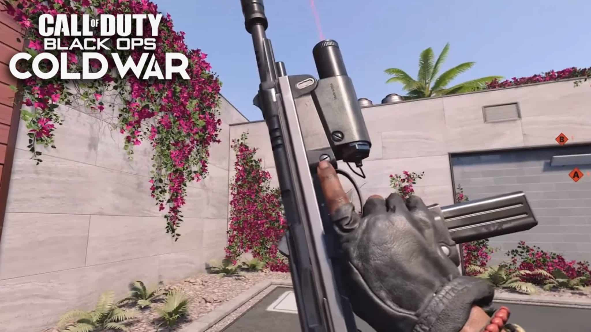
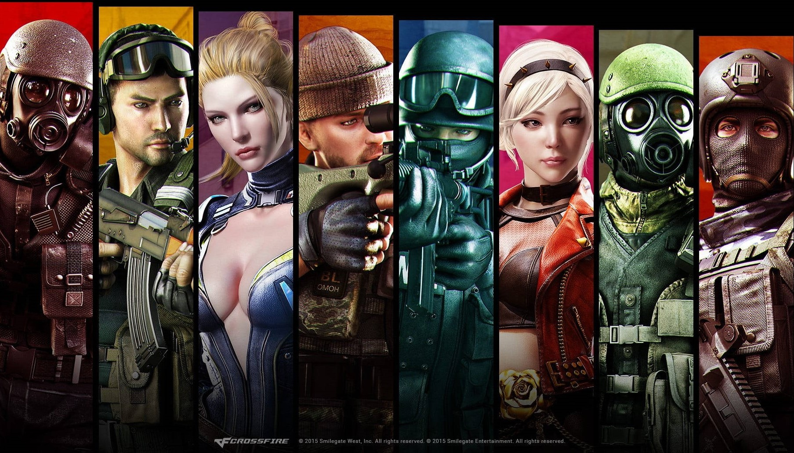

Jeux vidéos
Call Of Duty: Black Ops
Call Of Duty : Black Ops est un jeu qui me passionne depuis plusieurs années. Je joue parfois sur la PS4, mais je préfère sur mobile. J'ai commencé à jouer après que mon frères y ont pris intérêt. J'aime surtout jouer avec mes frères et mes cousins! Ce jeu nous donne une autre raison de passer du temps en famille et de s'amuser ensemble. Je suis maintenant au niveau 355. Mes modes préférés sont:

- Knife Only
- Sniper Only
- Team Death Match
- Frontline
- Infected
- Infected 2.0
- Search & Destroy : Revive
CrossFire Z8Games
Alors que ça fait quelques années que je n'ai pas joué à Cross Fire, j'y est toujours un intérêt. J'ai dù arrêter de jouer parce que mon ordinateur portable ne pouvait plus le supporter. Le pauvre a "crasher" plusieurs fois avant que j'ai décidé de mettre fin. Mais, dès que j'ai la chance d'acheter un PC, je vais définitivement recommancer à jouer. Quelques un de mes modes préférés étaient :
- Ghost Mode
- Team Deathmatch
- Mutation Mode
- Sniper Only
- Melee Only